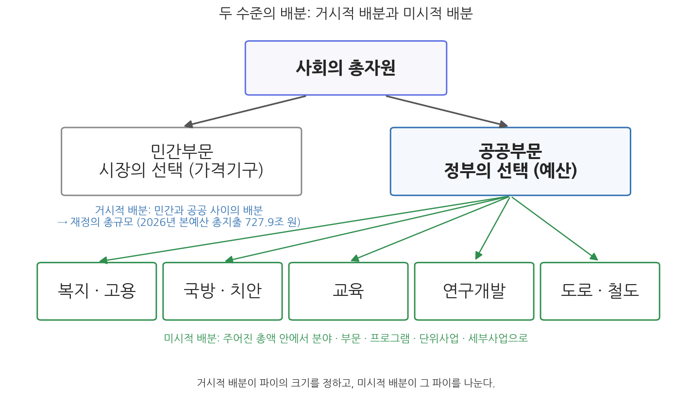
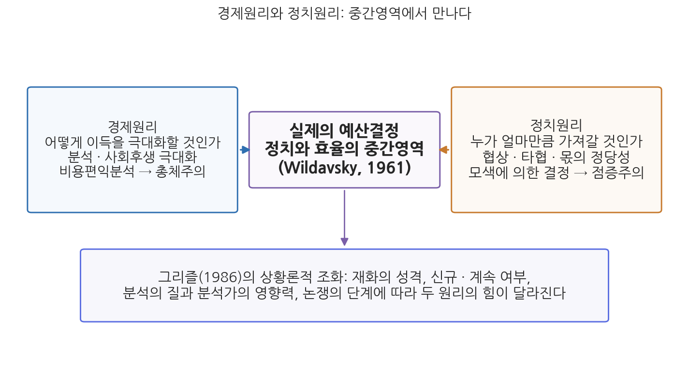

1주차 2차시. 배분의 정치경제: 희소성과 선택
최종 수정: 2026-08-13 · 이 교재는 학기 중에도 계속 업데이트됩니다
예산은 정치과정의 심장부에 놓여 있다. (에런 윌다브스키, 「예산개혁의 정치적 함의」, 1961)
이 장에서 배우는 것
1차시에서 본 2026년도 예산의 확정 장면으로 다시 돌아가 보자. 2025년 12월 2일 국회는 정부가 제출한 728조 원의 예산안에서 정책펀드와 AI(인공지능) 지원 등 4.3조 원을 깎고, 미래 성장동력·민생·재해예방·지역경제에 4.2조 원을 보태서, 정부안보다 0.1조 원 줄어든 727.9조 원의 예산을 확정했다. 이 장면에는 이 차시의 주제가 압축되어 있다. 총액은 사실상 그대로인데 내역이 움직였다. 어딘가에 돈을 보태려면 반드시 어딘가에서 돈을 빼야 했다는 뜻이다. 왜 그런가. 자원이 유한하기 때문이다. 그리고 무엇을 빼고 무엇을 보탤지는 계산만으로 정해지지 않았다. 여야가 다투고 협상한 결과였다. 요컨대 예산의 배분은 경제의 문제이면서 동시에 정치의 문제다.
이번 차시는 재정의 가장 근본적인 조건인 희소성에서 출발한다. 희소성 때문에 배분의 문제가 생기고, 배분은 두 수준에서 이루어진다. 사회의 총자원 중 얼마를 정부가 쓸 것인가라는 거시적 배분과, 정해진 총액 안에서 어느 부문에 얼마를 줄 것인가라는 미시적 배분이다. 그리고 이 배분을 움직이는 두 개의 논리, 곧 경제원리와 정치원리를 살펴보고 둘이 어떻게 조화될 수 있는지를 따진다. 구체적으로 다음을 배운다.
- 공공부문에서 희소성의 의미: 희소성의 법칙과 "인지된 관계"로서의 희소성(쉬크)
- 거시적 배분: 정부의 적정 규모, 시장실패와 정부실패, 재화의 유형
- 미시적 배분: 세입 측면의 부담 배분과 세출 측면의 부문 간 우선순위
- 재정배분의 경제적 측면과 정치적 측면, 그리고 두 원리의 상황론적 조화(그리즐)
이 장은 하나의 질문을 따라 전개된다. "한정된 자원을 누가, 어떤 논리로 나누는가?"
2.1 배분 문제의 뿌리인 희소성의 개념을 공공부문의 맥락에서 확인한다 → 2.2 거시적 배분(민간 대 공공, 재정의 총규모)의 논리를 시장실패·정부실패와 함께 본다 → 2.3 미시적 배분(총액 안에서의 우선순위)을 세입·세출 두 측면에서 본다 → 2.4 배분을 움직이는 경제원리와 정치원리를 대비하고, 두 원리의 조화를 모색한다.
2.1 공공부문의 희소성
희소성의 법칙: 배분 문제의 뿌리
모든 재화를 생산할 만큼 충분한 자원은 존재하지 않는다. 그래서 재화는 언제나 인간의 욕구(wants)에 비해 부족하다. 경제학이 희소성의 법칙이라고 부르는 이 조건은 공공부문에도 그대로 적용된다. 국민이 정부에 바라는 것(더 두터운 복지, 더 튼튼한 국방, 더 좋은 도로와 학교)은 사실상 무한하지만, 정부가 동원할 수 있는 자원은 국민이 낼 수 있는 세금과 감당할 수 있는 빚의 범위 안에 있다. 1차시에서 예산을 정책사업의 목록이자 가치판단의 산물이라고 했는데, 그 판단을 강제하는 조건이 바로 희소성이다. 자원이 무한하다면 고를 필요가 없고, 고를 필요가 없다면 예산이라는 제도 자체가 필요 없다. 희소성 때문에 공공자원을 어떻게 배분할 것인가의 문제가 발생하며, 그 배분의 우선순위를 정한 것이 바로 예산이다.
희소성(scarcity)은 자원이 욕구에 비해 부족한 상태를 말한다. 중요한 것은 희소성이 자원의 절대량만으로 정해지는 개념이 아니라는 점이다. 욕구와 자원이라는 양면의 조건이 모두 주관적이고 상대적이기 때문에, 희소성은 수요와 공급 사이의 인지된 관계에 의해 결정된다(Schick, 1980). 같은 나라의 재정이라도 상황에 따라 여유롭게도, 절박하게도 인지될 수 있다.
희소성은 상황에 따라 달라진다
정의의 뒷부분, 곧 희소성이 인지된 관계라는 명제는 재정을 이해하는 데 생각보다 중요하다. 정부가 쓸 수 있는 돈의 절대량은 단기간에 크게 변하지 않는데도, 재정이 풍족하게 느껴지는 시기와 한 푼이 아쉬운 시기가 갈리기 때문이다. 결정되는 것은 자원의 양이 아니라 욕구(지출 수요)와 자원(동원 가능한 재원)의 상대적 관계에 대한 인식이다.
두 장면을 비교해 보자. 첫째, 코로나19가 덮친 2020년에 한국 정부는 한 해에만 네 차례의 추가경정예산(추경)을 편성했다. 평시라면 재정건전성 논란에 막혔을 규모의 지출이 감염병 대응이라는 절박한 욕구 앞에서 빠르게 정당화되었다. 지출 수요의 폭발이 희소성의 인식 자체를 바꾼 것이다. 둘째, 만성적 재정적자의 상황에서는 반대의 일이 일어난다. 세입이 지출을 계속 밑돌면 새로운 사업은 물론 기존 사업의 유지조차 어렵게 느껴지고, 재정당국은 모든 요구를 삭감의 눈으로 보게 된다. 자원의 절대량이 갑자기 준 것이 아닌데도 희소성의 체감은 훨씬 심해진다. 요컨대 희소성의 정도는 상황에 따라 달라지며, 예산결정의 행태(공격적 요구, 방어적 삭감, 전면 재검토)도 그 인지된 희소성의 수준에 따라 달라진다. 이 통찰은 재정정책을 다루는 3부와 예산행태를 다루는 4부에서 다시 활용된다.
2.2 거시적 배분: 재정의 총규모 결정
사회의 총자원 중 정부의 몫은 얼마인가
재정의 핵심 문제는 자원배분이며, 배분은 두 수준으로 나뉜다. 공공과 민간 사이의 배분이 거시적 배분이고, 공공부문 안의 여러 대안 사이의 배분이 미시적 배분이다. 그림 1-3이 두 수준의 관계를 보여 준다.

그림 1-3을 읽는 법은 이렇다. 맨 위의 사회의 총자원이 민간부문(시장의 선택)과 공공부문(정부의 선택)으로 갈라지는 첫 번째 분기가 거시적 배분이고, 공공부문의 몫이 다시 여러 분야로 갈라지는 두 번째 분기가 미시적 배분이다. 이 그림에서 알 수 있는 것은 두 배분이 위계를 이룬다는 점이다. 거시적 배분이 파이의 크기를 정하고, 미시적 배분이 그 파이를 나눈다.
거시적 배분은 정부의 적정 규모에 관한 배분 문제다. 소비와 투자의 면에서 사회의 총자원 중 얼마의 비율이 시장의 가격기구가 아니라 정부의 선택에 의해 결정되어야 하는가. 그 답은 재정의 총규모, 또는 재정 총액의 GDP 대비 비율로 표시된다. 한국의 2026년 본예산 기준 총지출은 727.9조 원으로, 전년 본예산(673.3조 원)보다 8.1% 늘어난 역대 최대 규모다. 이 규모가 국민경제에서 차지하는 비중을 어림해 보면, 확정 예산과 함께 발표된 전망에서 2026년 국가채무 1,415.2조 원이 GDP 대비 51.6%라고 했으므로 역산되는 명목 GDP 전망치는 약 2,740조 원이고, 총지출 727.9조 원은 그 4분의 1을 조금 넘는 수준이다. 국민경제가 만들어 내는 가치의 대략 4분의 1이 정부의 손을 거쳐 배분된다는 뜻이다. 다만 이 비율은 어림값이며, 재정규모를 국가 간에 비교할 때 쓰는 엄밀한 기준(일반정부 기준 등)은 2부에서 따로 배운다.
왜 정부가 개입하는가: 시장실패
그 비율이 0%여서는 안 되는 이유, 곧 정부가 자원배분에 개입해야 하는 이유는 무엇인가. 일반적으로는 시장이 정부보다 효율적인 배분 장치라고 본다. 가격이라는 신호가 수요와 공급을 조정하고, 경쟁이 낭비를 걸러 내기 때문이다. 그러나 시장이 제대로 작동하지 못하는 상황, 곧 시장실패(market failure)가 있다. 교과서적 목록은 넷이다. 규모의 경제 때문에 한 공급자가 시장을 지배하게 되는 자연독점, 거래 당사자가 아닌 제3자에게 이익이나 피해가 번지는 외부효과, 값을 치르지 않은 사람을 배제할 수 없어 시장에 맡기면 아무도 공급하지 않게 되는 공공재, 그리고 거래 당사자 간 정보의 격차로 시장이 왜곡되는 정보비대칭이다. 시장실패가 발생하면 정부가 개입하여 이를 해결하고자 하며, 그 개입이 재정 지출과 규제의 형태를 띤다. 국방·치안 같은 순수공공재의 생산, 반독점법처럼 시장기능의 작동을 위한 법률적 조건의 확립, 사회보험을 통한 사회안전망의 구축, 물가와 실업 사이에서 균형을 잡는 경제안정화가 정부 역할의 대표적 목록이다.
재화의 성격을 뜯어보면 어떤 재화가 정부의 몫이 되는지가 더 분명해진다. 값을 안 낸 사람을 소비에서 배제할 수 있는가(배제성)와 한 사람의 소비가 다른 사람의 소비를 줄이는가(경합성)라는 두 기준을 교차하면 표 1-2의 네 유형이 나온다.
표 1-2. 배제성과 경합성에 따른 재화의 유형
| 구분 | 배제적 | 비배제적 |
|---|---|---|
| 경합적 | 사적재(민간 공급): 음식, 옷, 주택 | 공유재(정부/민간): 자연자원, 막히는 국도, 무료 국립공원 |
| 비경합적 | 클럽재(정부/민간): 한산한 유료고속도로, 한산한 수영장, 케이블 TV | 순수공공재(정부): 국방, 치안, 공중파 TV, 무료공원, 한산한 국도 |
표 1-2를 읽으면 두 가지가 보인다. 첫째, 순수공공재는 배제도 안 되고 경합도 없으므로 시장에 맡기면 공급되지 않는다. 값을 안 내도 국방의 보호를 받을 수 있다면 아무도 자발적으로 값을 내지 않을 것이기 때문이다. 정부가 조세로 재원을 걷어 직접 공급해야 하는 이유다. 둘째, 국도라는 같은 시설도 막히면 공유재이고 한산하면 순수공공재이듯, 재화의 유형은 고정된 꼬리표가 아니라 상황에 따라 변한다. 사적재와 순수공공재 사이의 넓은 회색지대(공유재, 클럽재)에서는 정부와 민간이 함께 공급하거나 조세와 수익자 부담을 섞는 방식이 쓰인다. 덧붙여 편익이 미치는 범위도 공급 주체를 가르는 기준이 된다. 국방·외교처럼 편익이 전 국민에게 미치는 재화는 중앙정부가, 청소·공원처럼 편익이 지역주민에게 국한되는 재화는 지방정부가 맡는 것이 자연스러우며, 이 중앙과 지방 간 기능·재정 배분의 문제는 2주차에서 재정의 기능과 함께 다룬다.
정부도 실패한다
시장실패가 정부 개입을 정당화한다고 해서 정부 개입이 언제나 성공하는 것은 아니다. 최근의 논의는 오히려 정부실패(government failure)에 초점을 맞춘다. 정부 활동은 비용(세금)을 대는 사람과 수입(서비스)을 누리는 사람이 분리되어 있어 비용 절감의 유인이 약하고, 조직이 공익 대신 예산 극대화 같은 내부 목표를 추구하는 내부성의 문제가 있으며, 개입의 혜택이 특정 집단에 쏠리는 분배적 불공평이 생길 수 있다(Wolf, 1988). 결국 자원배분의 선택은 시장이냐 정부냐의 이분법적 선택이 아니다. 시장도 실패하고 정부도 실패하므로, 현실의 선택은 양자의 상이한 조합, 곧 서로 다른 정도의 자원배분 유형 가운데 하나를 고르는 일이다. 요컨대 재정은 정부가 해야 할 것과 하지 말아야 할 것에 대한 선택이라고 할 수 있다.
이 선택의 기본 구도는 한국 헌법에도 새겨져 있다.
"① 대한민국의 경제질서는 개인과 기업의 경제상의 자유와 창의를 존중함을 기본으로 한다. ② 국가는 균형있는 국민경제의 성장 및 안정과 적정한 소득의 분배를 유지하고, 시장의 지배와 경제력의 남용을 방지하며, 경제주체간의 조화를 통한 경제의 민주화를 위하여 경제에 관한 규제와 조정을 할 수 있다."
무슨 뜻인가. 제1항은 시장의 원칙이다. 자원배분의 기본값은 개인과 기업의 자유로운 선택, 곧 시장이라는 선언이다. 제2항은 정부 개입의 근거다. 성장과 안정, 소득분배, 독과점 방지, 경제민주화라는 목적을 위해 국가가 개입할 수 있다고 정하고 있는데, 이 목록은 방금 본 시장실패의 교정 목록과 상당 부분 겹친다. 헌법이 거시적 배분의 두 축(시장이 기본, 정부는 근거 있는 개입)을 한 조문 안에 담아 놓은 셈이다. 정부 개입의 적정한 정도가 어디까지인가는 헌법이 답해 주지 않으며, 바로 그것이 매년 예산의 총규모를 둘러싸고 정치와 경제가 다투는 지점이다.
2.3 미시적 배분: 부문 간 우선순위
총액 안에서의 선택
미시적 배분은 주어진 예산 총액의 범위 안에서 여러 대안 사이에 자금을 배분하는 것이다. 거시적 배분이 파이의 크기를 정하는 문제라면, 미시적 배분은 정해진 파이를 나누는 문제이며, 두 측면으로 이루어진다.
수입 측면에서 배분은 세입예산을 편성하는 것이며, 이는 곧 국민의 부담을 결정하는 일이다. 같은 총액을 걷더라도 소득세로 걷는가 소비세로 걷는가, 누진의 정도를 어떻게 하는가에 따라 어느 계층과 어느 집단이 부담을 지는지가 달라진다. 그래서 세입의 배분은 소득분배의 문제와 직결된다. 지출만이 아니라 조세의 감면(조세지출) 역시 사실상의 배분 결정이라는 점, 그리고 세입예산의 구조는 2부에서 다룬다.
지출 측면에서 배분은 세출예산을 편성하는 것이며, 정부의 기능 간 또는 사업 간 우선순위에 따라 각 분야, 부문, 프로그램, 단위사업, 세부사업별로 예산을 배분하는 것이다. 복지에 얼마, 국방에 얼마라는 분야 수준의 큰 배분에서 시작해, 그 안의 부문과 프로그램을 거쳐, 개별 세부사업의 금액까지 내려가는 다층의 구조다. 이 구조를 지탱하는 제도가 프로그램 예산제도이며 그 상세는 2부에서 배운다. 여기서 기억할 것은 미시적 배분이 곧 우선순위의 언어라는 점이다. 어떤 분야의 몫이 늘어난다는 것은 총액이 정해져 있는 한 다른 분야의 몫이 상대적으로 줄어든다는 뜻이기 때문이다.
우선순위는 실제로 움직인다
미시적 배분이 얼마나 역동적일 수 있는지는 2026년 예산이 잘 보여 준다.
정부는 2026년 예산안에서 "AI 3강 대전환"에 10.1조 원을 편성했다. 전년의 3.3조 원에서 세 배 이상으로 늘린 것이다. 국회 확정 기준으로도 2026년 AI 예산은 9.9조 원, 738개 사업으로 집계되었다(국회예산정책처). 정부 연구개발(R&D) 예산은 35.5조 원으로 전년 대비 19.9% 늘었다. 예산안의 3대 투자 축은 초혁신경제(72조 원), 모두의 성장·기본이 튼튼한 사회(175조 원), 국민안전·국익 중심 외교안보(30조 원)였다. 한편 국회 심의 과정에서는 정책펀드·AI 지원 등에서 4.3조 원이 감액되고 미래 성장동력·민생·재해예방·지역경제에 4.2조 원이 증액되었다. (출처: 대한민국 정책브리핑, 2025년 12월; 국회예산정책처, 2026년 1월)
이 사례가 보여 주는 것은 두 가지다. 첫째, 총액과 내역은 다른 속도로 움직인다. 총지출은 전년 대비 8.1% 늘었지만 AI 부문은 세 배가 되었다. 총량의 변화가 완만해도 그 안의 우선순위는 크게 출렁일 수 있다는 것인데, 총량은 점증적이고 사업별 배분은 비점증적이라는 이 대비는 4부의 예산이론에서 중요한 논점으로 다시 등장한다. 둘째, 미시적 배분은 정부의 편성에서 끝나지 않고 국회의 심의에서 다시 조정된다. 4.3조 원의 감액과 4.2조 원의 증액은 헌법 제54조가 정한 심의·확정권이 실제 배분을 바꾸는 힘임을 보여 준다. 어느 부문의 몫이 늘고 어느 부문의 몫이 깎였는가는 그해 정치공동체의 우선순위가 어디로 이동했는가에 대한 가장 정직한 기록이다.
2.4 경제적 측면과 정치적 측면: 경제원리와 정치원리의 조화
경제적 측면: 어떻게 이득을 극대화할 것인가
재정배분의 메커니즘은 경제적 측면과 정치적 측면을 함께 내포하고 있다. 먼저 경제적 측면은 "어떻게 예산상의 이득을 극대화할 것인가"에 초점을 맞춘다. 목적은 합리적 재정배분을 통해 사회 전체의 후생을 극대화하는 것, 경제학의 언어로는 파레토 최적(Pareto optimum)의 달성이다. 파레토 최적이란 누군가의 상태를 나빠지게 하지 않고는 다른 누구의 상태도 더 좋게 만들 수 없는 상태, 곧 개선의 여지가 남아 있지 않은 배분을 말한다. 이를 위한 도구가 분석이다. 대안마다 비용과 편익을 계산해 순편익 또는 비용편익비율을 극대화하는 대안을 고르는 비용편익분석이 대표적이며, 이 방법은 5부에서 자세히 배운다. 이러한 경제적 합리성의 사고를 예산결정 전반으로 확장하면, 모든 대안을 포괄적으로 비교해 최선의 배분을 찾으려는 총체주의(comprehensive) 예산결정으로 이어진다.
정치적 측면: 누가 얼마만큼 가져갈 것인가
정치적 측면은 질문 자체가 다르다. "누가 얼마만큼 예산상의 이득을 향유할 것인가"가 초점이다. 목적은 사회후생의 극대화가 아니라 정치적 합리성, 곧 정치적 실현가능성을 기준으로 한 몫(share)의 극대화다. 분석에 따른 효율성보다는 협상과 타협을 통해 배분에 대한 정당성을 확보하는 것이 핵심이다. 이 장 첫머리의 인용이 말하듯 윌다브스키(Aaron Wildavsky)에게 예산과정은 곧 정치과정이다. 배분의 방법은 모든 대안의 총체적 비교가 아니라 그럭저럭 모색해 나가는 결정(muddling through)이 대표적이며, 결정은 총체적이기보다 단편적이고 분할적(disjointed)으로 이루어진다. 한 번에 전체 그림을 다시 그리는 것이 아니라, 수많은 참여자가 각자의 자리에서 조금씩 밀고 당긴 결과가 쌓여 배분이 된다는 것이다. 이러한 정치적 합리성은 전년도 예산 위에서 소폭의 조정을 거듭하는 점증주의(incrementalism) 예산결정으로 이어진다. 총체주의와 점증주의라는 두 이론 체계의 본격적 대결은 4부에서 다룬다.
경제원리와 정치원리를 배우고 나면 분석은 옳고 정치는 그르다는 도식에 빠지기 쉽다. 그러나 두 원리는 서로 다른 질문에 대한 서로 다른 종류의 합리성이다. 민주주의에서 국민의 부담과 혜택을 정하는 결정은 국민의 대표가 내려야 정당성을 가지며, 협상과 타협은 그 정당성을 만들어 내는 절차다. 아무리 정밀한 비용편익분석도 "그 효과가 바람직한가"라는 1차시의 가치판단 질문에는 답하지 못한다. 거꾸로 정치가 사실판단까지 대신할 때(효과 없는 사업이 힘 있는 지역구로 가는 일) 배분은 실패한다. 문제는 정치냐 분석이냐가 아니라, 각 판단이 제 몫의 자리를 지키는가다.
중간영역에서 만나다: 상황론적 조화
그렇다면 실제의 예산결정은 어디에서 이루어지는가. 윌다브스키는 재정배분의 결정이 정치와 효율성의 중간영역(twilight zone)에서 이루어진다고 보았다(Wildavsky, 1961). 순수한 계산의 세계도, 순수한 힘겨루기의 세계도 아닌 그 중간지대가 예산의 현실이라는 것이다. 그렇다면 필요한 것은 어느 한쪽의 승리가 아니라 정치경제학적 접근, 곧 두 원리를 함께 다루는 시각이다. 그림 1-4가 이 구도를 보여 준다.

그림 1-4를 읽는 법은 이렇다. 왼쪽 상자가 경제원리(분석과 후생 극대화, 총체주의로 연결)이고 오른쪽 상자가 정치원리(협상과 몫의 정당성, 점증주의로 연결)이며, 두 화살표가 만나는 가운데 상자가 실제 예산결정이 이루어지는 중간영역이다. 아래 상자는 두 원리의 힘의 균형이 상황에 따라 달라진다는 상황론의 요지다. 이 그림에서 알 수 있는 것은 두 원리가 배타적 선택지가 아니라 모든 예산결정에 다른 비율로 섞여 있는 두 성분이라는 점이다.
그 비율이 언제 어느 쪽으로 기우는가에 대해 그리즐(Grizzle, 1986)은 상황론적 접근을 제안했다. 요지는 네 가지다. 첫째, 순수공공재가 아닌 준공공재(공유재, 클럽재)에 대해서는 정치논리가 적용되는 경향이 있다. 수익자 부담과 조세가 섞이는 만큼 누가 얼마나 부담하고 누리는가의 다툼이 커지기 때문이다. 둘째, 분석의 영향은 계속사업보다 신규사업에서 크다. 이미 수혜집단이 형성된 계속사업은 정치적 관성이 강한 반면, 신규사업은 아직 지킬 사람이 없어 분석이 비집고 들어갈 틈이 있다. 셋째, 분석가들의 정치적 영향력이 강하거나 분석의 질이 높을 때는 경제원리가 더 큰 영향을 미친다. 넷째, 정치적 논쟁이 이미 시작된 이후에는 분석이 새로운 결론을 이끌기보다 각자의 기존 입장을 지지하는 근거로 활용된다. 요컨대 분석이 힘을 쓰는 조건과 정치가 힘을 쓰는 조건이 따로 있으며, 좋은 재정제도는 그 조건을 알고 설계된 제도다. 한국의 예비타당성조사(예타)가 신규 대규모 사업을 겨냥해 사업 착수 전에 분석을 배치한 것은 둘째와 넷째 명제의 제도적 응용으로 읽을 수 있다. 논쟁이 불붙기 전, 분석이 가장 힘을 쓸 수 있는 길목에 분석을 세워 둔 것이기 때문이다.
이것으로 재정의 출발점인 희소성과 배분의 논리를 살펴보았다. 이제 자연스러운 다음 질문은 이것이다. 그렇게 배분된 재정은 국민경제와 국민의 삶에서 실제로 어떤 일을 하는가. 2주차에서는 재정의 기능을 자원배분, 소득재분배, 경제안정화, 삶의 질 제고의 네 갈래로 나누어 살펴본다. 이번 차시에서 본 시장실패의 교정이 자원배분 기능으로, 세입 배분과 소득분배의 문제가 재분배 기능으로, 물가와 실업의 균형이 안정화 기능으로 이어지는 것을 확인하게 될 것이다.
요약
배분 문제의 뿌리는 희소성이다. 자원은 언제나 욕구에 비해 부족하며, 공공부문에서는 이 희소성 때문에 공공자원의 배분 문제가 발생하고 그 우선순위를 정한 것이 예산이다. 희소성은 자원의 절대량이 아니라 욕구와 자원 사이의 인지된 관계에 의해 결정되므로(Schick, 1980), 코로나19와 같은 위기와 만성적 재정적자의 시기에 희소성의 체감과 예산행태는 크게 달라진다. 배분은 두 수준으로 이루어진다. 거시적 배분은 사회의 총자원 중 정부의 몫, 곧 재정의 총규모를 정하는 문제로, 2026년 본예산 기준 총지출 727.9조 원(전년 대비 8.1% 증가)은 명목 GDP의 대략 4분의 1을 넘는 수준이다. 정부 개입의 근거는 자연독점, 외부효과, 공공재, 정보비대칭이라는 시장실패에 있으며, 배제성과 경합성으로 나눈 재화의 네 유형 중 순수공공재는 정부 공급이 필요하다. 그러나 비용과 수입의 분리, 내부성, 분배적 불공평 같은 정부실패도 있으므로(Wolf, 1988), 거시적 배분은 시장이냐 정부냐의 이분법이 아니라 양자의 조합에 대한 선택이고, 헌법 제119조는 시장 기본과 근거 있는 개입이라는 이 구도를 담고 있다. 미시적 배분은 주어진 총액 안에서의 배분으로, 세입 측면에서는 국민 부담의 배분(소득분배와 직결)이고 세출 측면에서는 분야·부문·프로그램·단위사업·세부사업으로 내려가는 우선순위의 결정이다. 2026년 예산에서 AI 예산이 전년의 세 배(정부안 10.1조 원)로 늘고 국회 심의에서 4.3조 원 감액과 4.2조 원 증액이 이루어진 것은 총량의 완만한 변화 아래에서 우선순위가 크게 움직일 수 있음을 보여 준다. 재정배분에는 사회후생 극대화를 묻는 경제적 측면(비용편익분석, 총체주의로 연결)과 몫의 배분과 정당성을 묻는 정치적 측면(협상과 타협, 점증주의로 연결)이 함께 있으며, 실제 결정은 정치와 효율의 중간영역에서 이루어진다(Wildavsky, 1961). 그리즐의 상황론(Grizzle, 1986)은 재화의 성격, 신규·계속 여부, 분석의 질과 분석가의 영향력, 논쟁의 단계에 따라 두 원리의 힘이 달라진다고 정리하며, 두 원리의 조화가 재정제도 설계의 과제다.
토론·복습 문제
1-5. (계산·해석형) 2025년 본예산 총지출은 673.3조 원, 2026년 본예산 총지출은 727.9조 원이다. (가) 전년 대비 증가율을 직접 계산하시오. (나) 2026년 국가채무 전망 1,415.2조 원이 GDP 대비 51.6%라는 정보를 이용해 2026년 명목 GDP 전망치를 역산하고, 총지출이 GDP에서 차지하는 비율을 구하시오. (다) 두 수치가 각각 거시적 배분에 관한 어떤 정보를 담고 있는지 해석하시오.
1-6. (서술형 연습) 거시적 배분과 미시적 배분의 개념을 정의하고, 각각이 결정하는 것이 무엇인지 설명하시오. 이어서 미시적 배분이 세입 측면과 세출 측면에서 각각 어떤 문제(부담의 배분, 우선순위의 배분)로 나타나는지 서술하고, 두 측면이 왜 모두 소득분배와 무관할 수 없는지 논하시오.
1-7. 다음 재화들을 표 1-2의 네 유형(사적재, 공유재, 클럽재, 순수공공재)으로 분류하고 그 근거(배제성, 경합성)를 밝히시오. (가) 출퇴근 시간의 무료 도시고속도로 (나) 심야의 한산한 유료고속도로 (다) 국가의 감염병 방역체계 (라) 대학 구내식당의 점심. 분류 결과를 바탕으로, 각 재화의 공급을 시장과 정부 중 어느 쪽에 맡기는 것이 적절한지 논하시오.
1-8. (찬반 토론) "예산 배분은 정치적 협상이 아니라 비용편익분석과 같은 과학적 분석에 따라 결정되어야 한다"는 주장에 대해 찬성과 반대의 논거를 각각 제시하시오. 그리즐의 상황론적 접근(재화의 성격, 신규·계속 여부, 분석의 질, 논쟁의 단계)을 활용하여, 분석이 힘을 발휘하기 좋은 조건과 정치적 조정이 불가피한 조건을 구분해 자신의 입장을 정리하시오.